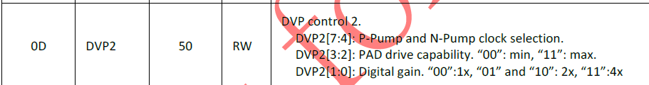

8. 完成AE配置功能¶
Sensor驱动功能皆由operation callbacks实现。
本章节以使用者已详悉Sensor datasheet为前提描述AE Callbacks应实现的基本功能。
8.1. 开发流程¶
请依序实现以下AE基本功能callbacks
pfn_cmos_get_ae_default
pfn_cmos_fps_set
pfn_cmos_inttime_update
pfn_cmos_gains_update
pfn_cmos_again_calc_table
pfn_cmos_dgain_calc_table
pfn_cmos_get_inttime_max
8.2. 注意事项¶
pfn_cmos_get_ae_default： 回传AE算法相关的sensor数据。
需要提供 AE 算法在 linear 模式下的最大及最小曝光条数，linear/ WDR模式仿真/数字增益的最大及最小值以及增益的类型， 数字增益若是只有如 : 0db , 6db, 12db 等少数几种选择，则为 DB 型， 其余为线性，曝光生效周期的 frame 数，开机第几个 frame 后稳定的 frame 数。
u32FullLinesStd : 在初使化序列内, 一帧内时间的line数.
u32MaxAgain: 最大的AGain 值.
u32MinAgain: 最小的AGain 值.
u32MaxDgain: 最大的DGain 值.
u32MinDgain: 最小的DGain 值.
u32MaxIntTime: 线性模式中最大的曝光值.
u32MinIntTimeTarget: 线性模式中最小的曝光值.
u32AEResponseFrame: AE最大的反应时间(unit: frame)
主要是要按照sensor spec填写相关AE的属性，包括FullLinesStd,FullLinesMax, IntTime的max、min以及step, gain的max和min以及step等。注意要确认好intTime和gain的AccuType:

一般情况下intTime设定和对应register是成线性关系的, AccuType配置成AE_ACCURACY_LINEAR;
gain的设定一般设为AE_ACCURACY_TABLE,表示从gain table去映射， 后面会介绍pfn_cmos_again_calc_table/pfn_cmos_dgain_calc_table。
不过有些sensor可能gain设定比较特殊，比如soi_F35这款,它的dgain就不能做到很细的调节，只有1x, 2x, 3x, 4x这4个挡位。
{kind=link}

pfn_cmos_fps_set： 设定sensor帧率。
默认为Sensor输出模式的最大帧率。Sensor驱动增加输出的垂直Blanking条数达到降低帧率的效果。
注意由于输出总条数改变，有些Sensor的曝光范围也会改变，Sensor驱动须重新计算。
例如, 若初始序列的FPS=30, 新的FPS 不能大于30.通常调整frame rate的方法是依照比例增加sensor输出的full lines.
例如, 若在FPS=30时, full lines = 1125. FPS=25时的full lines = 1125*30/25 = 1350。
pfn_cmos_inttime_update： 设定Sensor的曝光时间并回传实际生效的曝光条数给 AE。
输入参数为一数列，在WDR模式依序代表短曝帧与长曝帧的曝光值，单位为水平输出条数。
例如，当u32IntTime[0]=8，u32IntTime[[1]=1000，代表短曝帧曝光为8条线的时间，长曝帧为1000条线的时间。
若在线性模式，序列[0]即代表曝光值，序列[1]无意义。注意在WDR模式， 调整Sensor短帧曝光可能需要重新计算Crop信息与mipi-rx设定。
pfn_cmos_gains_update： 设定Sensor的增益值。
输入参数为pu32Again与pu32Dgain两个序列。
在WDR模式，pu32Again[0]代表短曝帧的模拟增益值，pu32Again[[1]代表长曝帧的模拟增益值；
pu32Dgain[0]代表短曝帧的数字增益值，pu32Dgain[[1]代表长曝帧的数字增益值。
数值为Sensor缓存器的设定值，可由pfn_cmos_again_calc_table与pfn_cmos_dgain_calc_table转换真实增益值。
在线性模式，仅pu32Again[0]与pu32Dgain[0]有意义。
可由pfn_cmos_again_calc_table与pfn_cmos_dgain_calc_table转换真实增益值。
在线性模式，只有pu32Again[0]和pu32Dgain[0]有意义。
在WDR mode下：
pu32Again[0]: 短帧的Again配置.
pu32Again[1]: 长帧的Again配置.
pu32Dgain[0]: 短帧的Dgain配置.
pu32Dgain[1]: 长帧的Dgain配置.
Gains update有3种模式： SHARE, WDR_2F, ONLY_LEF, 设置在pfnSetInit.
SHARE: 长短帧共享Gain配置 (Sony, OV).
WDR_2F: 长短帧分开Gain配置 (Sony, OV).
ONLY_LEF: 仅长曝帧Gain可配置 (SOI).
pfn_cmos_again_calc_table： 输入为1024为基准的模拟增益值，Sensor驱动经查表或计算出不大于输入值且最相近的模拟增益值，输出对应的Sensor缓存器设定。
pu32AgainLin: AE传入1024-based的Again.
Sensor驱动依照规格书的gain table或公式, 回传最接近的1024-based Again.
Again的范围定义于pfn_cmos_get_ae_default
pu32AgainDb: 回传对应的Sensor Again register 配置.
pfn_cmos_dgain_calc_table： 输入为1024为基准的数字增益值，Sensor驱动经查表或计算出出不大于输入值且最相近的数字增益值，输出对应的Sensor缓存器设定。
pu32DgainLin: AE传入1024-based的Dgain.
Sensor驱动依照规格书的gain table或公式, 回传最接近的1024-based Dgain.
Dgain的范围定义于pfn_cmos_get_ae_default
pu32DgainDb: 回传对应的Sensor Dgain register 配置.
若sensor Dgain调整为阶型(1X, 2X, 4X…),
pfn_cmos_get_ae_default 内的stDgainAccu.enAccuType须设定成AE_ACCURACY_DB.
pfn_cmos_get_inttime_max： 用于WDR模式，计算在当前的曝光比下长短帧可容许曝光条数的范围。
SONY DOL, F35 HDR-wo VC, OV HDR-DT, Smartsens SC200AI 都是利用blanking区间实现短帧曝光。
有些sensor (OS08A20, F35) 可设定成Fix L2S distance, 即设定一个最大的短帧曝光值, 当调整短帧曝光时, L2S distance 不会变化, ISP crop size 不需动态配置.
u16ManRatioEnable: Manual Ratio Enable, 设定为1
au32Ratio[0] : 2 frame HDR下, 长帧曝光*64/短帧曝光比
au32IntTimeMax[0] : 短帧最大曝光值(单位:一条H时间)
au32IntTimeMax[1] : 长帧最大曝光值(单位:一条H时间)
au32IntTimeMin[0] : 短帧最小曝光值(单位:一条H时间)
au32IntTimeMin[1] : 长帧最小曝光值(单位:一条H时间)
pu32LFMaxIntTime[0] : NA